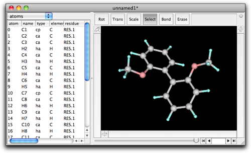
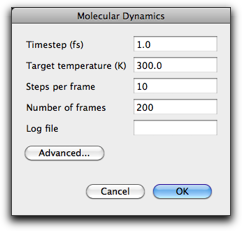
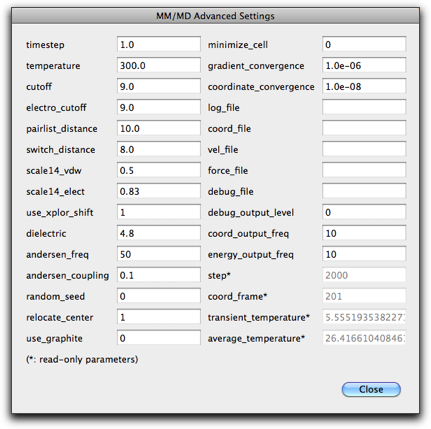
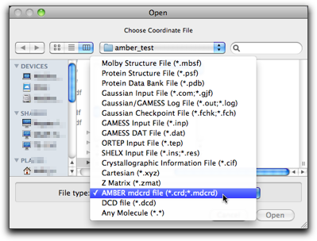
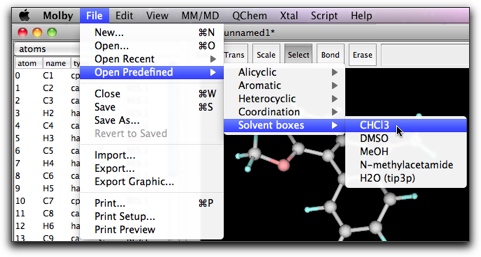
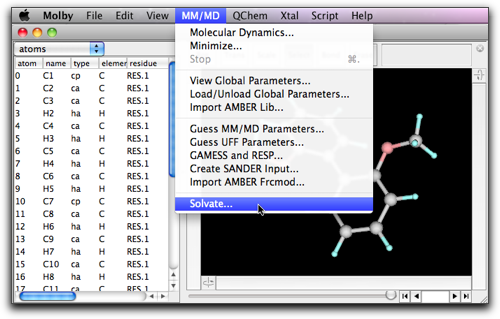

Step Seven: Molecular Dynamics (MD) Calculation
1. MD Calculation within Molby
Molby implements molecular dynamics (MD) calculation which uses the same force fields as the energy minimization by molecular mechanics (MM). This implementation is suitable only for preliminary calculations (to check parameters quickly, etc.); for production runs, it is strongly recommended that you use one of the established software packages.
An example of preliminary MD run is presented here. We use 2,2'-dimethoxybiphenyl again. In a similar way as in the step six, create a model and assign MM parameters (including the partial charges on the atoms).

Select MM/MD → Molecular Dynamics. A setting dialog opens. Although this dialog resembles that in MM minimization, it shows different parameters that are relevant to the MD calculation.

The "timestep" parameter defines the minimum time increment in solving the equation of motions. The "target temperature" defines the temperature of the system. Before running the MD calculation, all atoms are let to have random velocities with the Boltzmann distribution corresponding to the target temperature. In addition, the velocities are modified so that the temperature is kept constant. The "steps per frame" and "number of frames" parameters have the same meaning as in the MM minimization. The screenshot shows 10 as the "steps per frame"; this is an appropriate value for MM minimization, however for MD calculations a larger value would be more appropriate (like 100).
Pressing the "Advanced..." button opens another dialog with other parameters. The meanings of the parameters are described in the embedded Ruby document, in the MDArena page.

Return to the original MD dialog (by pressing "Close" in the advanced settings dialog), and press "OK". The MD run starts, and new frames are accumulated. If you find something is wrong, or want to stop before getting the specified number of frames, you can stop the MD run by pressing Command-period (Mac) or Control-period (Windows).
2. Using Molby with AMBER: Creating Inputs and Importing Outputs
For production runs, you can create AMBER input files from Molby. More specifically, you can create "prmtop" and "inpcrd" files for the SANDER module.
Note: There is no guarantee that Molby creates the exactly same input as the official AMBER modeling tools, nor the generated files are valid inputs for the SANDER module. You may need to modify them by hand.
To creat SANDER input files, select "Create SANDER input..." command in the "MM/MD" menu.

You will be asked first for the file name for the "prmtop" file. Please be sure to add ".prmtop" extension. The other file, "inpcrd" file, is created as the same name with the ".prmtop" extension replaced by the ".inpcrd" extension.

Subsequently, you will be asked to select one of the two versions of the prmtop files. The older one, "AMBER8/NAMD", allows you to use the output file by NAMD (see below).

Now you can transfer your files to the workstation running SANDER. To perform the simulation, you still need to create the instruction file for SANDER, which you should already know if you are using AMBER.
After the simulation is over, you can get the trajectory file ("mdcrd" file) back and import to Molby. Use "Import..." command in the "File" menu, select "AMBER mdcrd file (*.crd; *.mdcrd)", and specify the file.

3. Using Molby with NAMD: Creating Inputs and Importing Outputs
You can also use the NAMD software package for production run. NAMD is developed by the Theoretical Biophysics Group in the University of Illinois at Urbana-Champaign, and the official information is found at their web site (http://www.ks.uiuc.edu/Research/namd/). NAMD can use the AMBER "prmtop" as the input, by use of the instruction amber yes. See NAMD Users' Guide for details.
You can also import the NAMD output by importing the dcd file. The file format is also listed in the "Import..." file dialog.
4. Building Solvated Structures
When you want to perform MD simulations in explicit solvent, you need to build a box of solvent molecules around the target molecule. Molby can help creating solvated structures.
To build a solvated structure, you need to open the file containing the predefined box of the desired solvent. The following solvent box is included in the Molby package, and can be accessed from "File" → "Open Predefined" → "Solvent boxes" submenu. The tip3box was taken from the AmberTool package, and other solvent boxes were taken from Amber parameter database.
| name | solvent | reference |
|---|---|---|
| tip3pbox | water | Jorgensen, W. L.; Chandrasekhar, J.; Madura, J.; Klein, M. L. J. Chem. Phys. 1983, 79, 926. |
| chcl3box | chloroform | Cieplak, P.; Caldwell, J. W.; Kollman, P. A. J. Comp. Chem. 2001, 22, 1048. |
| dmsobox | dimethylsulfoxide | Fox, T.; Kollman, P. A. J. Phys. Chem. B 1998, 102, 8070. |
| meohbox | methanol | Caldwell, J. W.; Kollman, P. A. J. Phys. Chem. 1995, 99, 6208. |
| nmabox | N-methylacetamide | Caldwell, J. W.; Kollman, P. A. J. Phys. Chem. 1995, 99, 6208. |

While keeping the solvent box open, create or open the target (solute) molecule in a separate window. With this solute molecule in the front window, select "Solvate..." command in the "MM/MD" menu.

A dialog box opens.

In the popup menu "Choose solvent box:", you will find the solvent box you opened earlier. Note that this popup menu lists all open molecules that have the associated periodic box (or unit cell). This can lead to a confusing situation that, if you have another solvated structure also open, that structure will also be listed in this popup menu, because a solvated structure always have a periodic box. Therefore, please take care so that you choose the right solvent box.
If you open the solvent box from the "Open Predefined" menu, you can easily recognize it in the popup menu, because the name has asterisks at the beginning and the end, like "*CHCl3*".
The "Box offset" parameters define the thickness of the solvent layer surrounding the solute molecule. More specifically, the periodic box of the solvated structure is determined as follows: the minimum cuboid that can surround the solute molecule is defined, and all the faces are offset by the "Box offset" distances to the outside direction. On the other hand, it is possible to define the size of the periodic box explicitly for any of the three (x, y, z) directions. If you wish to do this, give a negative number for that direction. (For example, if you want the periodic box to be 40 Å in the x direction, give -40 as the first "Box offset" parameter.)
The size of the periodic box can be checked by selecting "Xtal" → "Unit Cell..." menu command, or in the property table (the "unit cell" property).
The "Exclusion limit distance" defines the minimum allowed distance between the solvent and solute molecules. The solvent molecule is removed when it has atoms with smaller distances than this parameter from the solute molecule.